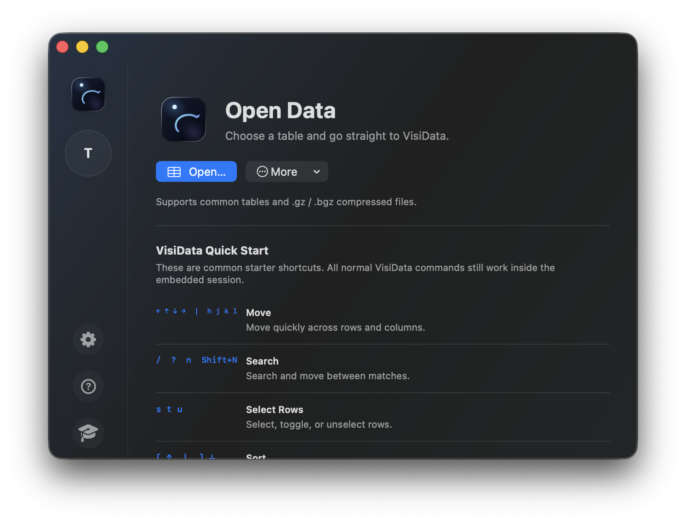

Native macOS shell · Real VisiData engine
The real VisiData. A native Mac window.
Open large tables and compressed datasets without leaving macOS. iData keeps VisiData’s keyboard-first workflow intact.
Download iData
Universal DMG for macOS 14+ · Apple silicon and Intel
Install with Homebrew
brew install --cask laleoarrow/tap/idata
The real iData interface

Latest release
v0.2.20
Published
A native macOS shell for the real VisiData engine, packaged as a universal app.
Download v0.2.20Install
Homebrew
Install the cask and keep iData easy to update.
brew install --cask laleoarrow/tap/idata
VisiData is installed separately; iData provides setup guidance on first launch.
Read the release notes